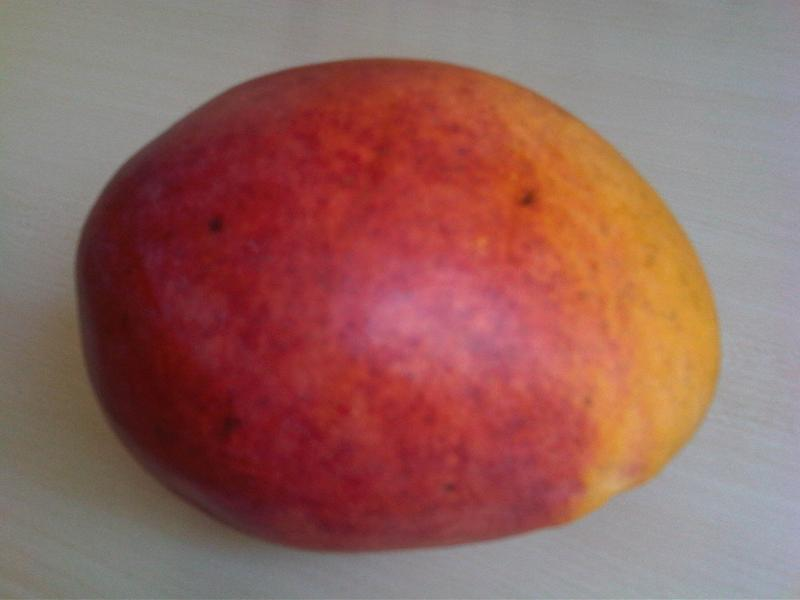

Árvores e Frutíferas
Manga-coquinho
Mangifera indica · variedade Coquinho
Manga-coquinho é o nome de uma variedade ou grupo de mercado de manga cultivado no Brasil. Como ocorre com muitas variedades regionais, a aparência e as características do fruto podem variar conforme a origem do material e o local de cultivo. A imagem mostra mangas de Mangifera indica como referência geral, não uma confirmação da variedade Coquinho.
- Espécie
- Mangifera indica
- Variedade
- Coquinho
- Observação
- Foto ilustrativa de manga